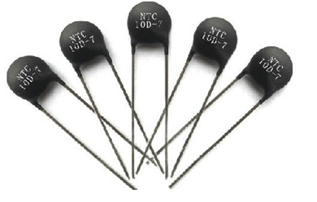
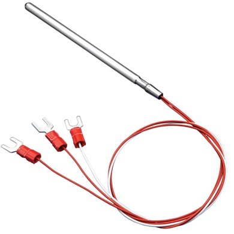
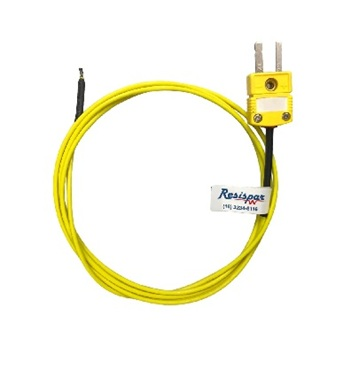

A temperatura é uma grandeza física que mede o grau de agitação ou energia cinética média das moléculas e átomos de um corpo ou sistema com a agitação das moléculas, quando está mais agitada ela fica mais quente e quando as moléculas estão mais paradas fica mais frio, ela pode ser medida geralmente com a utilização de um termômetro, sendo a medida uma forma de dar valor a alguma grandeza.
O calor em geral é uma transferência de energia entre corpos e sistemas de diferentes temperaturas podendo ser por condução, convecção e irradiação.
Múltiplos e submúltiplos são formas de se aumentar ou diminuir um número utilizando os fatores de 10, seja multiplicando para aumenta-lo (múltiplos) ou dividindo para diminui-lo (submúltiplo).
A precisão refere-se ao quão perto as medições estão umas das outras, já a exatidão mostra o quão perto da medição de um medidor está do seu valor verdadeiro.
Como sensores análogicos de temperatura temos alguns exemplos sendo eles:
Termistores, que são baseados na variação da resistência elétrica;


O Termopar tipo k é um dos sensores térmicos mais utilizados, formado por dois tipos de metais, o cromel e alumel, tendo como faixa de temperatura entre 200Cº medindo a temperatura por uma das pontas do sensor enquanto a outra fica de referência.

Além do tipo k que é o mais utilizado também se tem os termopares tipo J T, E, N, S, R, B, C, D e o G
para se escolher o melhor sensor de temperatura não deve-se so escolher qualquer um, mas sim aquele tenham seus critérios necessários, tendo como base a sua escala, que já elimina várias opções, não utilizar o seu sensor no limite também é algo importante na hora de escolher um sensor.